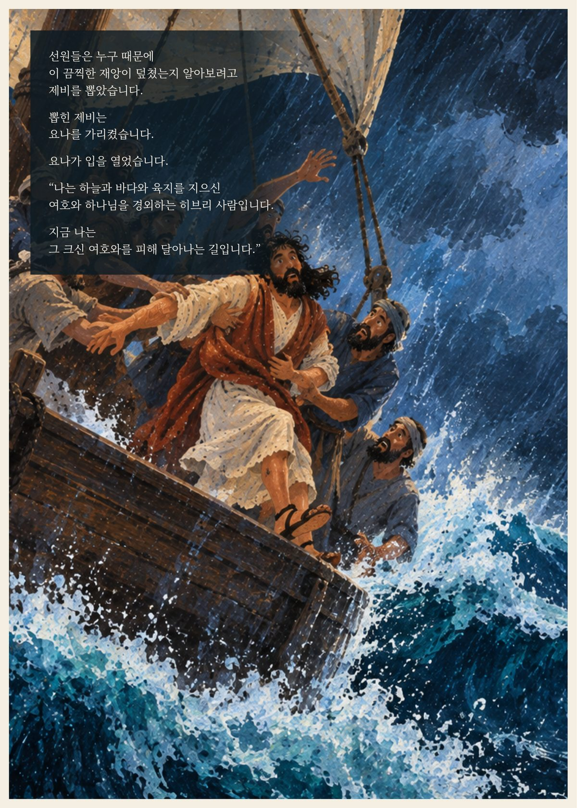
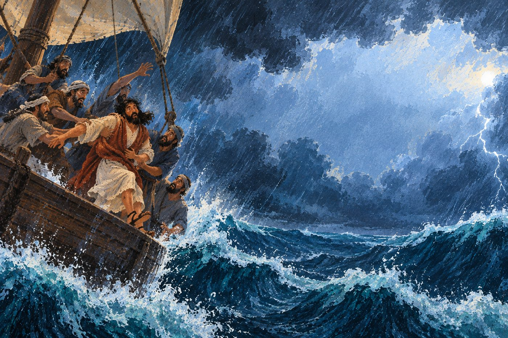
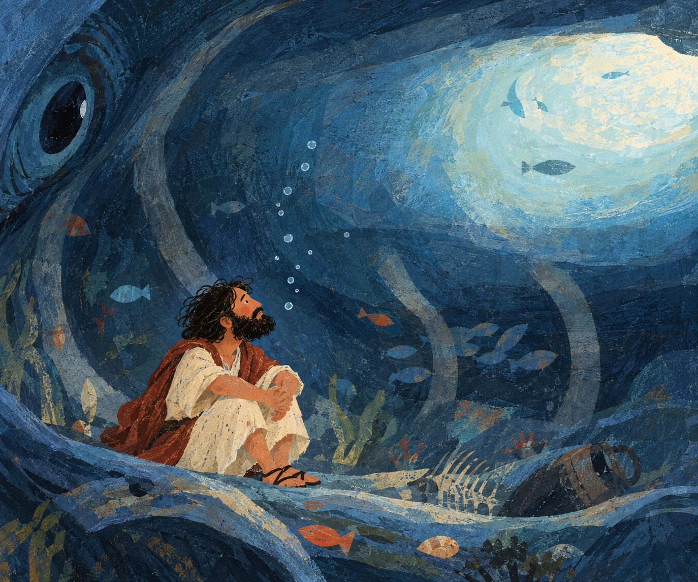
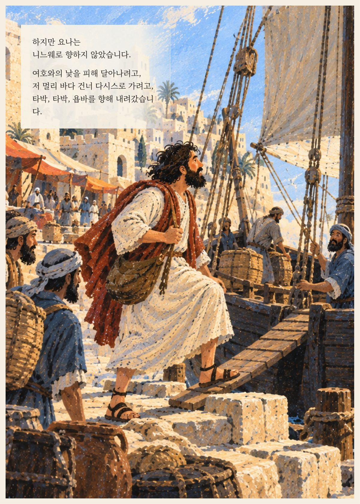
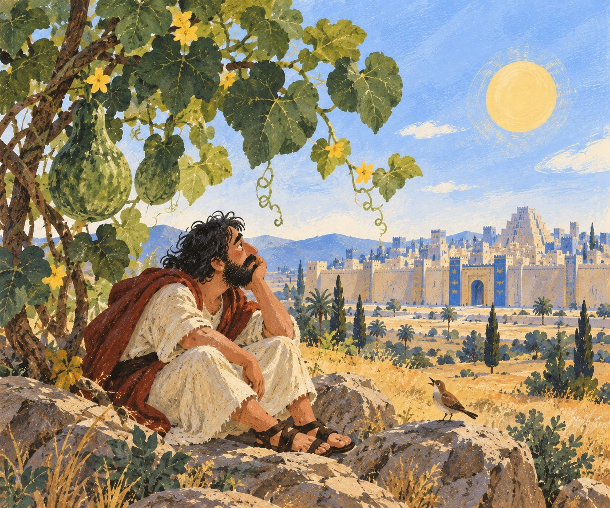

Series 05 · 이야기로 읽는 성경
이야기와 그림이
함께 만드는 책
이야기로 읽는 성경은 성경 이야기를 요약해서 들려주지 않습니다. 서사와 삽화, 페이지가 함께 움직이며 한 이야기를 완성해 가는 그림 성경 시리즈입니다.

이 책은 어떤 책인가
줄거리 요약이 아니라,
이야기와 그림이 함께 짓는 책
성경 이야기를 짧게 요약하는 책은 많습니다. 이야기로 읽는 성경은 다른 길을 갑니다. 본문의 장면과 침묵까지 그대로 살려 원고로 옮기고, 그 장면에 맞춰 인물과 배경을 그리고, 원고와 그림을 한 페이지 안에 함께 앉힙니다.
그래서 이 책은 “이야기가 무엇을 말하는가”로 끝나지 않고, “그 이야기가 어떤 장면과 그림으로 살아나는가”를 함께 보여 줍니다.
“나는 하늘과 바다와 육지를 지으신 여호와 하나님을 경외하는 히브리 사람입니다. 지금 나는 그 크신 여호와를 피해 달아나는 길입니다.”— 「요나서」 페이지 중에서
이야기 미리보기
요나서

이야기로 읽는 성경 · 첫 편
요나서
니느웨로 가라는 부르심을 피해 달아난 요나가 풍랑과 큰 물고기, 그리고 다시 주어진 부르심을 지나는 이야기를 그림책 분량으로 다시 썼습니다. 원고와 그림, 페이지까지 모두 만들었습니다.
이야기 → 인물·장면 → 그림 → 페이지
원고에서 한 페이지가 되기까지

- 이야기 — 요나서 전체를 침묵하는 장면까지 그대로 살려 원고로 옮겨 씁니다. 내용을 줄이거나 상상으로 채우지 않습니다.
- 인물과 장면 — 배가 떠나는 욥바, 풍랑 이는 바다, 큰 물고기, 시든 박넝쿨 아래의 요나까지, 원고 속 장면을 하나씩 짚습니다.
- 그림 — 각 장면의 인물과 배경, 색을 원고에 맞춰 그립니다.
- 페이지 — 원고와 그림을 한 판형 안에 앉혀, 읽는 이가 문장과 그림을 함께 따라가도록 완성합니다.
실제 페이지와 그림
책 속 미리보기


이 페이지들은 내부 제작 과정에서 나온 자료입니다. 최종 인쇄·출간본과 다를 수 있습니다.
이야기로 읽는 성경은 지금 만들어지고 있는 시리즈입니다. 이 페이지는 그 과정에서 미리 보여 드리는 프리뷰이며, 다음 이야기는 준비되는 대로 이 자리에 더해집니다.
다음 이야기도,
이렇게 한 페이지씩 지어집니다.